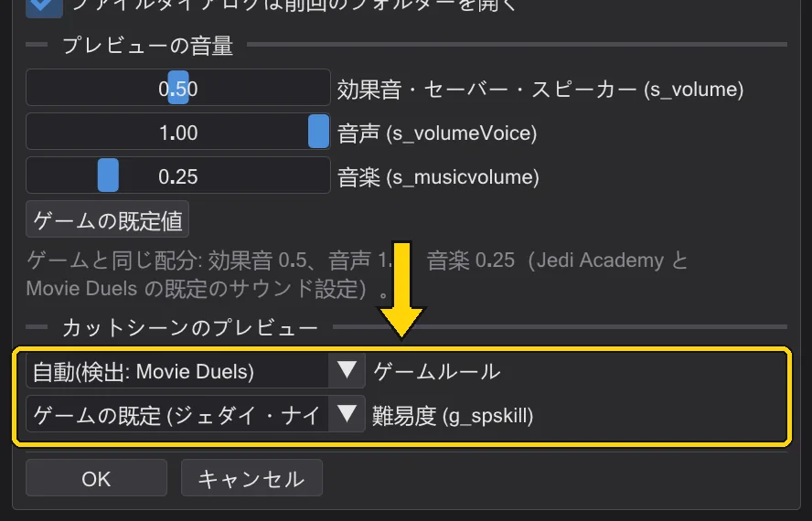

設定とアップデート
プログラムのパスとオプションの場所、キーの変更方法、アップデートの受け取り方。
ゲームフォルダー#
編集 → ゲームフォルダー には、プログラムが .pk3 を読むフォルダーが 上へ・下へ・削除・開く 付きで並びます。エンジンで fs_game が base を上書きするのと同じく、一番下が上のすべてより優先されます。アーカイブのないフォルダーはそう表示されるので、パスが間違っていると分かります。

Jedi Outcast(JK2)#
BehavEd-Remake はオリジナルの Jedi Outcast でも使えます。コンパイル済みスクリプト(.ibi、バージョン 1.57)とマップの形式は Jedi Academy と同じで、ICARUS のコマンドも同じです。設定 → ゲームルール の Jedi Outcast(JK2) は、OpenJK と Movie Duels に続く 3 つ目のルールです。手本は OpenJK に含まれる JK2 のゲームコード(codeJK2)です。
- コマンドセット:Jedi Outcast のルールでは、アニメーション、ミッション目標、行動状態、SET_ フィールドの一覧は JK2 のもの(
data/jk2)になります。Jedi Outcast のassets0.pk3にある 1356 本のスクリプトのうち 1352 本はバイト単位で同じに再コンパイルされます。チェックで残る 326 件の注意は Raven のスクリプトにある実際の誤りです。設定で自分のコマンドファイルを指定した場合はそれが常に優先されます。 - ゲームフォルダー:Jedi Outcast には 編集 → ゲームフォルダー に専用の一覧(Jedi Outcast のゲームフォルダー (.pk3))があります。両方のゲームに同じ名前で中身の違うファイルがあるため、2 つの一覧は決して混ざりません。有効なルールの一覧が使われます。ゲームフォルダーを追加… は Jedi Outcast のフォルダーを自動的にその一覧へ入れます。
- 自動:Jedi Outcast のフォルダーだけが設定されているとき、または ミッションを読み込む… で Jedi Outcast のミッションを開いたとき(フォルダーの隣に
jk2sp.exeがある、またはkejim_postなどの JK2 マップがある)は Jedi Outcast になります。Movie Duels のフォルダーがあれば常に Movie Duels、はっきりしないときは OpenJK です。 - キャラクター:NPC は
ext_data/NPCs.cfgから読み込まれ、プレイヤーはkyle(スクリプトでも同じ)、人型のキャラクターは JK2 の 72 本のボーンのスケルトンを使い、JK2 の NPC クラスは JK2 のキャラクターを選びます。ライトセーバーに.sabファイルは不要です。柄と刃の長さは NPC クラス(Desann 48、リボーン 32、それ以外 40)、色は NPCs.cfg のsaberColorで決まります。 - 歩行とカメラ:NPC は JK2 のナビゲーターで目的地へ歩きます。道が空いていればまっすぐ、そうでなければ
maps/<マップ>.navのウェイポイント網に沿って進みます(ファイルがないかマップと合わないときはウェイポイントから作ります)。速度も JK2 と同じで、走りはすぐ最高速度になり、歩きは少しずつ速くなり、目的地の手前で減速します。武器は JK2 の NPC 表で決まり、NPC の Kyle はプレイヤーの武器を持ち、刃は JK2 のようにちらつきます。カメラの FOLLOW と揺れは 1 フレーム遅れて表示され、カメラの ROFF はノートを無視し、yavin_swampの沼の水は固体ではなく、雨と雪は JK2 に従います。目標の見つからない SET_NAVGOAL にdowaitすると、ゲームと同じくいつまでも待ちます。
設定#
編集 → 設定(または操作列の 設定、Alt+P)にはオリジナル BehavEd のオプションとカットシーンのプレビューのオプションがあります。
- フォルダー:スクリプトのパス、コマンド定義ファイル(すべてのコマンドを定義する
.bhc。コマンドモデルを再読み込み で再読み込み)、ソースファイルのパス。 - 起動時に前回のファイルを開く・プルダウンを五十音順に・アイコンの別配色を使う・開く・新規・終了時に確認・ファイルダイアログは前回のフォルダーを開く。
- プレビューの音量:効果音・セーバー・スピーカー (s_volume)・音声 (s_volumeVoice)・音楽 (s_musicvolume)。ゲームのサウンド設定と同じです。ゲームの既定値 で 0.5 / 1.0 / 0.25 に戻します。プレビューの音の鳴り方:ゲームと同じ音。
- カットシーンのプレビュー → ゲームルール で、カットシーンのプレビューがどちらのゲームをまねるかを決めます。OpenJK(素の Jedi Academy)か Movie Duels で、両者のゲームコードはところどころ計算が異なります。クラスと難易度ごとの NPC の旋回速度、NPC が進路を直して向きを変える間隔(OpenJK は 100 ms ごと、Movie Duels は 50 ms ごと)、既定の難易度、ライトセーバーのぶつかり合い、cg_fovAspectAdjust とゲームウィンドウ、キャラクターに付いた ROFF のサウンドです。3 つ目の選択肢は Jedi Outcast です(Jedi Outcast(JK2))。「自動」はゲームフォルダーに Movie Duels のフォルダーがあれば Movie Duels、Jedi Outcast のフォルダーなら Jedi Outcast、それ以外は OpenJK を選びます。マップを読み込むとステータス一覧に使われるルールが表示されます。アスペクト比と cg_fovAspectAdjust そのものは 表示設定 → ゲーム画面 にあります(プレビューとカメラ視点)。
- 難易度 (g_spskill):パダワン・ジェダイ・ジェダイ・ナイト・ジェダイ・マスター。ゲームの g_spskill です。最初の項目はゲームの既定値です(Movie Duels は ジェダイ・ナイト、OpenJK は パダワン)。ゲームと同じく、ストームトルーパーやリボーンなど一部の NPC の旋回の速さ、タスケン・レイダーの歩く・走る速さ(ジェダイ・ナイト 以上)、2 本のライトセーバーがぶつかるのに必要な近さが変わります。マップがほかの難易度用(または
notsingle)と指定したエンティティは、ゲームがマップ読み込み時に取り除くため表示されません。スクリプトが名前で呼ぶ NPC でも、そのスポナーがこうして取り除かれる場合は同じです(その NPC へのaffectは何もしません)。変更するとプレビューがすぐに作り直されます。 - 言語・テーマ・インターフェースの大きさは 表示 メニューにあります。

キーの変更#
編集 → キーボードショートカット にキーを持つすべての操作が並びます。ショートカットをクリックして新しいキーを押します。Esc で取り消し、Backspace で削除。使用済みのキーは表示されます。既定値は キーボードショートカット を参照。
アップデートと変更履歴#
ヘルプ → アップデートを確認 で GitHub に新しいバージョンを問い合わせ、新機能を表示します。ダウンロードしてインストール でプログラムファイル(単体の .exe ならファイル名に関係なくプログラムだけ)を置き換え、再起動を案内します。隣の切り替えで起動時に確認するかを決めます。ヘルプ → 更新履歴 はバージョンごとの修正と追加をあなたの言語で表示し、アップデート後に一度自動で開きます。